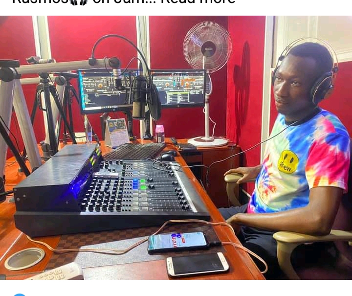
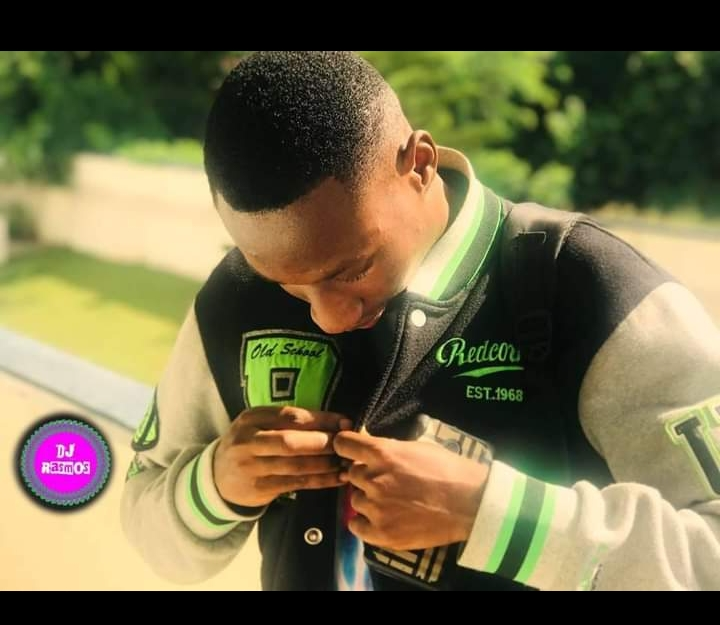
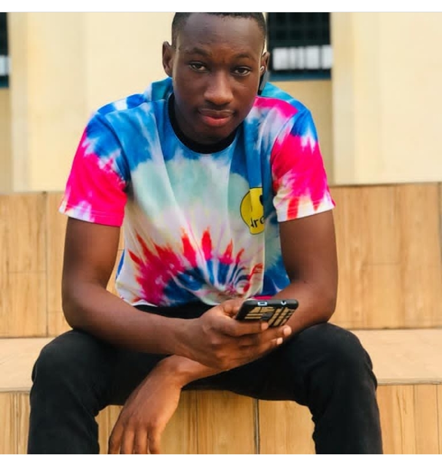
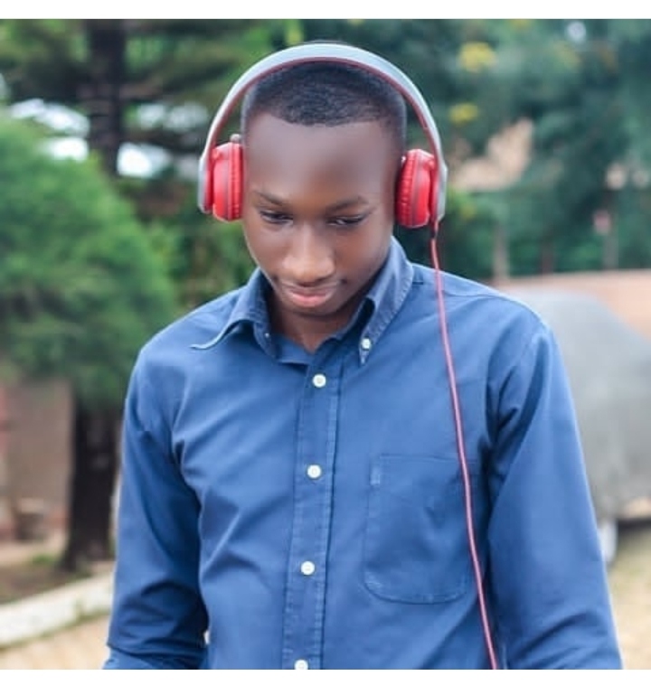
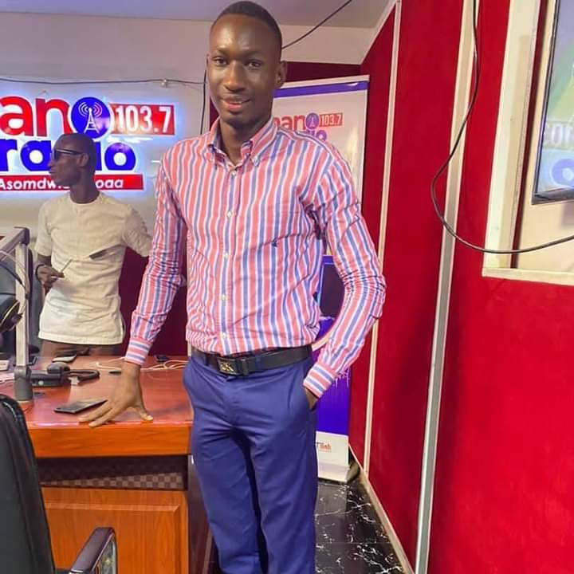
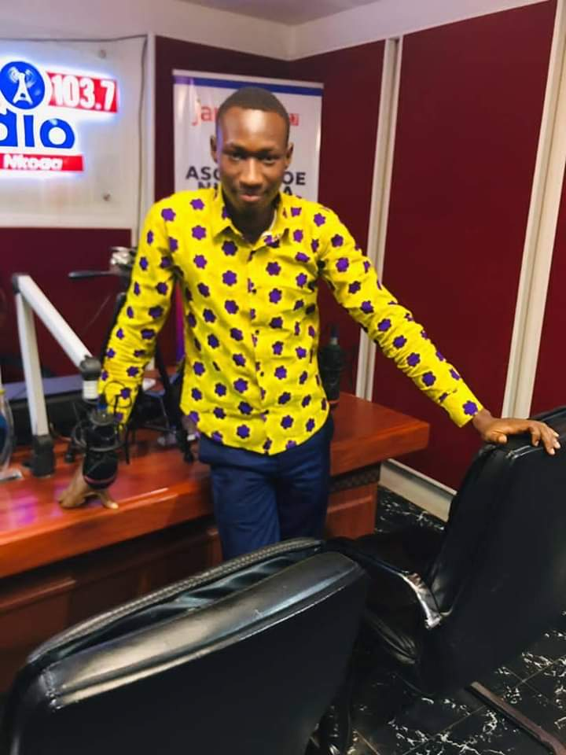
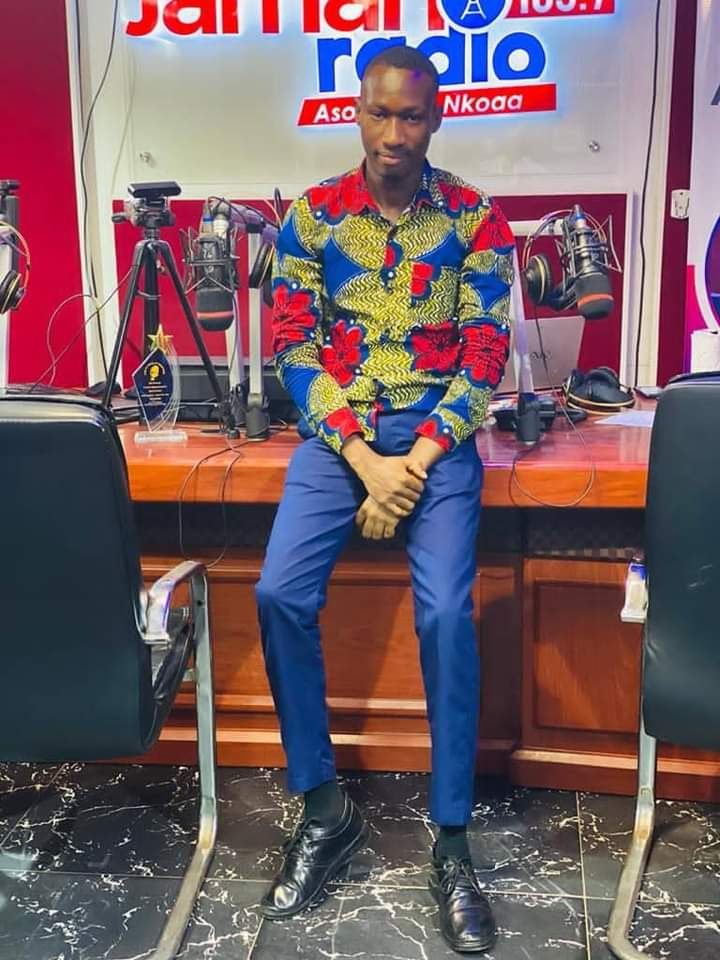

BIO
Takyi Antwi Rasmos populary known as DJ Rasmos was born on
29th December 1998 at Dwenem clinic a native town of Drobo Jaman
south Municipality Bono Region by Mr Bio Antwi Anthony and Mrs Sakyi
Mfodwaa Helina who happens to be both teachers. He started his education at
Baabianeha Presby Primary and later went to ST James preparatory School Drobo. Rasmos
continue his JHS education at Japekrom Presby JHS. At high school Rasmos join Acherensua Senior
High School. Rasmos developed passion for DJing at his younger age. At age 9 Rasmos use to DJ as a
hobby but developed much passion at the university of Cape coast. He was introduced to the
entertainment chairman of the Casely Hayford Hall who introduced him much into Djing. He
started Djing at the hall during the weekends where a lot campus artist passes through. At
level 100 Rasmos joined ATL FM Media School but was not able to complete due to financial
constraints. At the third year Rasmos was fortunate to have an internship with Jaman Radio
an new radio station based in the Bono region and was the producer for Sunday Gospel Fiesta
and Sunday Omutuo Special but was only within two months. Rasmos was known to perform at a
lot of August occasion such J.E Casely Hayfod Memorial Lecture. DJ Rasmos was nominated as
best campus in 2020 UMB campus awards after a lot of mixtape on Audiomack.
DJ Rasmos is set to release a show on social media called CUE POP which features hippop artist.
These are some of his images







Dj Rasmos is a Ghanaian born DJ/presenter and a graduate of cape coast Ghanaian
.He was nominated as best DJ in Ghana tertiary awards in 2020 and nominated at Ghana youth influential
awards as most influential youth DJ in 2021. Join DJ Rasmos on Youtube, telegram,instagram, facebook and other
platforms.send your message on +233550977300/ 0577602057/ +233577602057
and also follow him on Youtube.
This is the official telegram platform of DJ Rasmos Ghana.Music 360.You can send your request for mixtapes
telegram mixtapes
Dj Rasmos has alot of mixtapes on audiomack, Audiomack mixtapes.
He always get thousands of streams everyday.You can listen
,enjoy and thank me later.
 DJ Rasmos
DJ Rasmos
 DJ Rasmos
DJ Rasmos
 DJ Rasmos
DJ Rasmos
 +23355077300
+23355077300